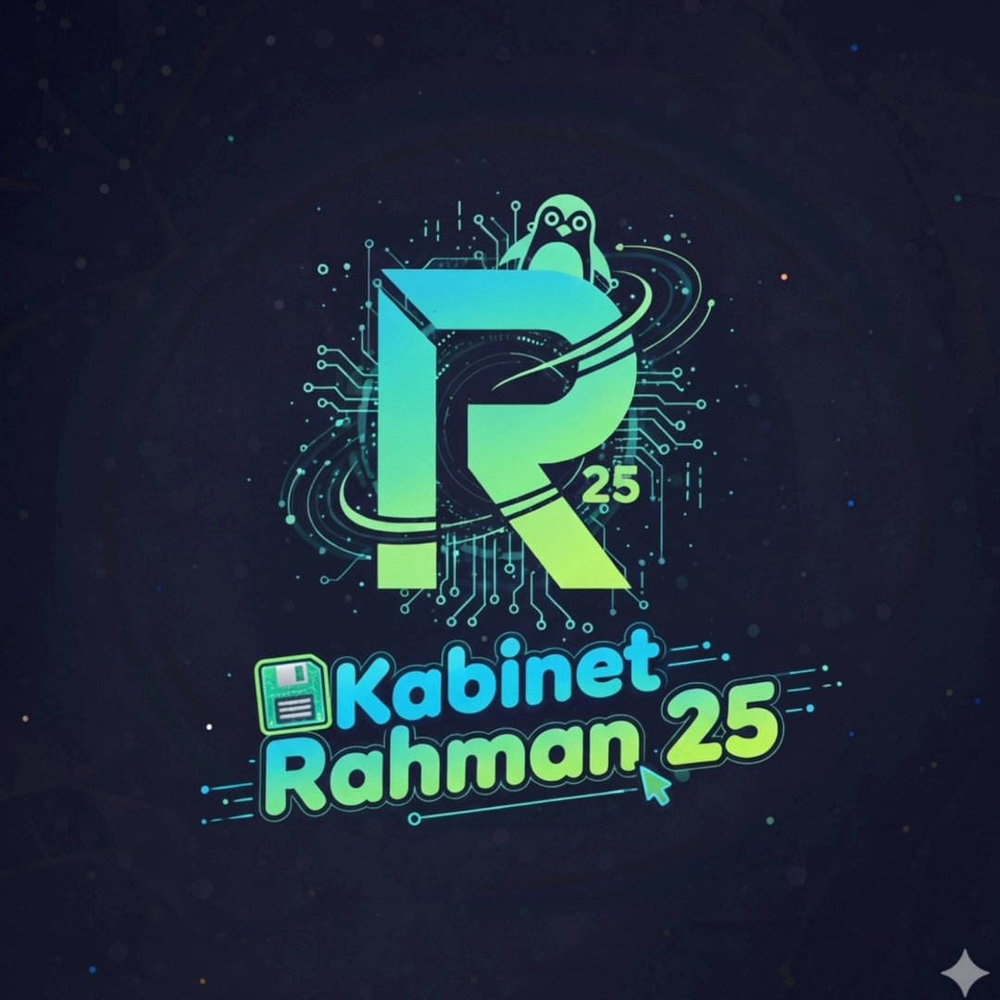
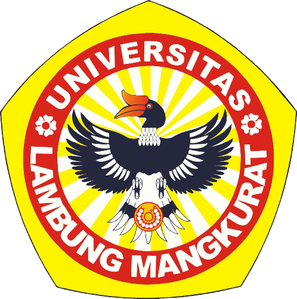

Terbuka untuk gagasan
Mahasiswa dapat membawa pertanyaan, masukan, dan ide untuk dibahas bersama.

Kabinet Rahman 25HIMAKOM · FMIPA ULMHimpunan Mahasiswa Ilmu Komputer · ULM
Kabinet Rahman 25 menjadi ruang mahasiswa HIMAKOM untuk berkolaborasi, mengembangkan gagasan, dan mengambil peran.
HIMAKOM ULM · KABINET RAHMAN 25

Kabinet Rahman 25 menjalankan kepengurusan HIMAKOM FMIPA ULM. Kami ingin menghadirkan ruang untuk mahasiswa saling terhubung, belajar, dan berkarya.

Mahasiswa dapat membawa pertanyaan, masukan, dan ide untuk dibahas bersama.
Ruang kerja lintas minat membantu anggota saling berbagi pengetahuan dan pengalaman.
Gagasan mahasiswa diwujudkan menjadi kegiatan yang bermanfaat bagi lingkungan HIMAKOM.
Narasi pengantar. Visi dan misi resmi kabinet belum tersedia pada sumber konten.
Nama divisi berikut tercantum dalam dashboard sumber. Susunan final dan uraian tugas perlu dikonfirmasi.
Temukan kegiatan, karya, dan agenda HIMAKOM di sini. Daftar program resmi belum tersedia untuk dipublikasikan.
Program kerja akan diumumkan setelah jadwal resmi ditetapkan.
Kami ingin mendengar masukan dan gagasan mahasiswa. Kanal aspirasi resmi akan dicantumkan setelah alamatnya dikonfirmasi.
Kontak publik belum tersedia. Tidak ada pesan yang dikirim atau disimpan dari halaman ini.Organisasi yang baik memberi ruang bagi anggotanya untuk ikut menentukan arah.